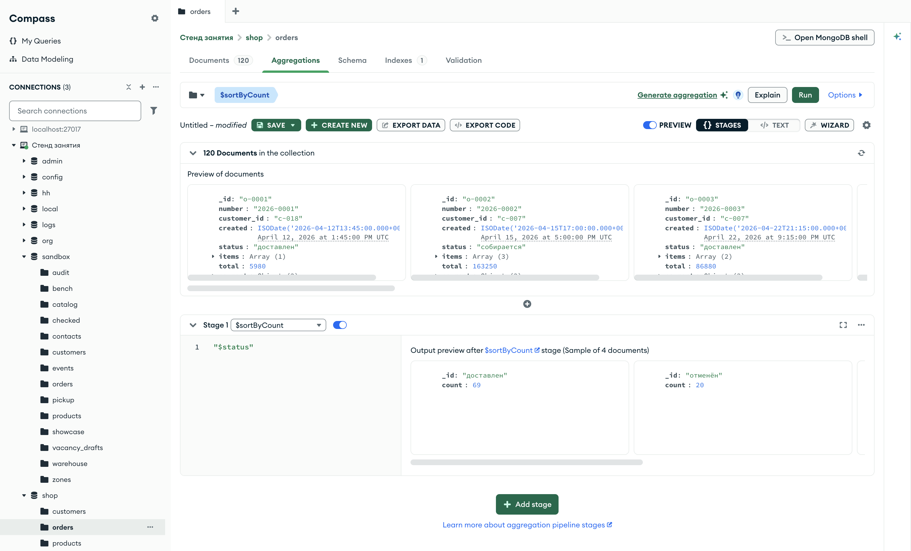

Справочник по MongoDB · модуль 4 · конвейер агрегации
4.5
$skip, $count,
$sortByCount и память сортировки
В этой главе разобраны три стадии и одно ограничение сервера. $skip пропускает первые документы потока и вместе с $limit делит результат на страницы. $count заменяет поток одним документом с числом документов. $sortByCount считает документы по значениям поля и упорядочивает группы по убыванию числа. В конце разобрано, сколько памяти сервер отводит на сортировку и почему $sort перед $limit держит в памяти только несколько документов.
- Категория
- Агрегация
- Уровень
- Начальный
- Связанные темы
- Сортировка, предел и пропуск в find (глава 1.6), $sort и $limit (глава 4.1), $group (глава 4.4), explain (глава 3.3)
- Зачем это знать
- Делить результат на страницы, считать документы и частоту значений одним конвейером и понимать, когда сортировка упирается в память сервера
Как запускать примеры этой главы
mongodb-glava-4.5-python.zip, 62 КБmongodb-glava-4.5-ruby.zip, 62 КБmongodb-glava-4.5-go.zip, 68 КБmongodb-glava-4.5-cpp.zip, 68 КБ — все примеры главы готовыми программами, базы и стенд в Docker. В README.md — запуск в Docker, если Compass нет или он не подключается, и на установленном сервере с Compass, а также что должна напечатать каждая программа.lessons/ch4_5.py — пример вставляется в конец файлаlessons/ch4_5.rb — пример вставляется в конец файлаlessons/ch4_5.go — пример внутрь скобок в конце main, функции и типы — выше mainlessons/ch4_5.cpp — пример внутрь скобок в конце main, функции — выше maincd lessons, затем python ch4_5.pycd lessons, затем python3 ch4_5.py · в Docker: docker compose run --rm python lessons/ch4_5.pycd lessons, затем ruby ch4_5.rb · в Docker: docker compose run --rm ruby lessons/ch4_5.rbcd lessons, затем go run ch4_5.go · в Docker: docker compose run --rm go lessons/ch4_5.gocd lessons, затем g++ -std=c++17 ch4_5.cpp -o prog $(pkg-config --cflags --libs libmongocxx1) && ./prog · в Docker: docker compose run --rm cpp lessons/ch4_5.cpp§1Стадия $skip и страницы
Интернет-магазин показывает каталог страницами: на первой — первые двадцать товаров, на второй — следующие двадцать. Чтобы собрать вторую страницу, первые двадцать товаров списка пропускают, а из оставшихся берут двадцать.
Стадия $skip пропускает первые N документов потока и передаёт дальше остальные. Параметр — число. Вместе с $limit она выделяет из упорядоченного потока страницу: $skip пропускает предыдущие страницы, $limit оставляет одну. Те же действия у метода find выполняют skip и limit из главы 1.6.
Пример делит 13 заказов в пути на страницы по пять, от самого дорогого к самому дешёвому, и выводит вторую страницу.
У стадии $skip в mongocxx::pipeline есть свой метод — skip, параметр — число.
pipeline = [
{"$match": {"status": "в пути"}},
{"$sort": {"total": -1}},
{"$skip": 5},
{"$limit": 5},
]
show(orders.aggregate(pipeline), "number", "total")
mongocxx::pipeline pipeline; pipeline.match(make_document(kvp("status", "в пути"))); pipeline.sort(make_document(kvp("total", -1))); pipeline.skip(5); pipeline.limit(5); show(orders.aggregate(pipeline), {"number", "total"});
pipeline := mongo.Pipeline{
{{Key: "$match", Value: bson.D{{Key: "status", Value: "в пути"}}}},
{{Key: "$sort", Value: bson.D{{Key: "total", Value: -1}}}},
{{Key: "$skip", Value: 5}},
{{Key: "$limit", Value: 5}},
}
cursor, _ := orders.Aggregate(ctx, pipeline)
show(cursor, "number", "total")
pipeline = [
{ "$match" => { "status" => "в пути" } },
{ "$sort" => { "total" => -1 } },
{ "$skip" => 5 },
{ "$limit" => 5 },
]
show(orders.aggregate(pipeline), "number", "total")
2026-0081 | 150470 2026-0088 | 126370 2026-0055 | 98970 2026-0043 | 56370 2026-0054 | 55360 документов: 5
2026-0081 | 150470 2026-0088 | 126370 2026-0055 | 98970 2026-0043 | 56370 2026-0054 | 55360 документов: 5
2026-0081 | 150470 2026-0088 | 126370 2026-0055 | 98970 2026-0043 | 56370 2026-0054 | 55360 документов: 5
2026-0081 | 150470 2026-0088 | 126370 2026-0055 | 98970 2026-0043 | 56370 2026-0054 | 55360 документов: 5
На схеме — 13 заказов в пути после сортировки и что с ними делают $skip и $limit.
- 2026-0028 · 244 460
- 2026-0085 · 225 320
- 2026-0025 · 211 760
- 2026-0027 · 191 970
- 2026-0119 · 182 250
- 2026-0081 · 150 470
- 2026-0088 · 126 370
- 2026-0055 · 98 970
- 2026-0043 · 56 370
- 2026-0054 · 55 360
- 2026-0033 · 9 180
- 2026-0023 · 8 490
- 2026-0056 · 6 790
- 2026-0028 · 244 460
- 2026-0085 · 225 320
- 2026-0025 · 211 760
- 2026-0027 · 191 970
- 2026-0119 · 182 250
- 2026-0081 · 150 470
- 2026-0088 · 126 370
- 2026-0055 · 98 970
- 2026-0043 · 56 370
- 2026-0054 · 55 360
- 2026-0033 · 9 180
- 2026-0023 · 8 490
- 2026-0056 · 6 790
- 2026-0081 · 150 470
- 2026-0088 · 126 370
- 2026-0055 · 98 970
- 2026-0043 · 56 370
- 2026-0054 · 55 360
$skip пропускает первые пять документов — первую страницу. Из оставшихся восьми $limit берёт пять — вторую страницу.
На второй странице заказы с шестого по десятый: от 2026-0081 за 150 470 до 2026-0054 за 55 360. На схеме — все 13 заказов после $sort и три страницы.
- 1 · 2026-0028 · 244460
- 2 · 2026-0085 · 225320
- 3 · 2026-0025 · 211760
- 4 · 2026-0027 · 191970
- 5 · 2026-0119 · 182250
- 6 · 2026-0081 · 150470
- 7 · 2026-0088 · 126370
- 8 · 2026-0055 · 98970
- 9 · 2026-0043 · 56370
- 10 · 2026-0054 · 55360
- 11 · 2026-0033 · 9180
- 12 · 2026-0023 · 8490
- 13 · 2026-0056 · 6790
Число перед номером — место заказа в потоке после $sort. Страница N получается так: $skip на (N − 1) × 5, затем $limit 5. Последняя страница короче остальных: на ней три заказа.
Страница определена правильно, только когда поток упорядочен: без $sort пропуск отсчитывается в порядке хранения. Важен и порядок самих стадий $skip и $limit.
§2Порядок $skip и $limit
У метода find пропуск и предел — параметры одного запроса, и сервер всегда сначала пропускает, затем ограничивает. В конвейере это две стадии, и выполняются они в порядке списка, как $match и $limit в главе 4.1. Пример выполняет обе стадии в двух порядках с теми же числами.
limit_then_skip = [
{"$match": {"status": "в пути"}},
{"$sort": {"total": -1}},
{"$limit": 10},
{"$skip": 5},
]
skip_then_limit = [
{"$match": {"status": "в пути"}},
{"$sort": {"total": -1}},
{"$skip": 5},
{"$limit": 10},
]
print("── $limit 10, затем $skip 5")
show(orders.aggregate(limit_then_skip), "number", "total")
print("── $skip 5, затем $limit 10")
show(orders.aggregate(skip_then_limit), "number", "total")
mongocxx::pipeline limit_then_skip; limit_then_skip.match(make_document(kvp("status", "в пути"))); limit_then_skip.sort(make_document(kvp("total", -1))); limit_then_skip.limit(10); limit_then_skip.skip(5); mongocxx::pipeline skip_then_limit; skip_then_limit.match(make_document(kvp("status", "в пути"))); skip_then_limit.sort(make_document(kvp("total", -1))); skip_then_limit.skip(5); skip_then_limit.limit(10); std::cout << "── $limit 10, затем $skip 5" << std::endl; show(orders.aggregate(limit_then_skip), {"number", "total"}); std::cout << "── $skip 5, затем $limit 10" << std::endl; show(orders.aggregate(skip_then_limit), {"number", "total"});
limitThenSkip := mongo.Pipeline{
{{Key: "$match", Value: bson.D{{Key: "status", Value: "в пути"}}}},
{{Key: "$sort", Value: bson.D{{Key: "total", Value: -1}}}},
{{Key: "$limit", Value: 10}},
{{Key: "$skip", Value: 5}},
}
skipThenLimit := mongo.Pipeline{
{{Key: "$match", Value: bson.D{{Key: "status", Value: "в пути"}}}},
{{Key: "$sort", Value: bson.D{{Key: "total", Value: -1}}}},
{{Key: "$skip", Value: 5}},
{{Key: "$limit", Value: 10}},
}
fmt.Println("── $limit 10, затем $skip 5")
cursor, _ := orders.Aggregate(ctx, limitThenSkip)
show(cursor, "number", "total")
fmt.Println("── $skip 5, затем $limit 10")
cursor, _ = orders.Aggregate(ctx, skipThenLimit)
show(cursor, "number", "total")
limit_then_skip = [
{ "$match" => { "status" => "в пути" } },
{ "$sort" => { "total" => -1 } },
{ "$limit" => 10 },
{ "$skip" => 5 },
]
skip_then_limit = [
{ "$match" => { "status" => "в пути" } },
{ "$sort" => { "total" => -1 } },
{ "$skip" => 5 },
{ "$limit" => 10 },
]
puts "── $limit 10, затем $skip 5"
show(orders.aggregate(limit_then_skip), "number", "total")
puts "── $skip 5, затем $limit 10"
show(orders.aggregate(skip_then_limit), "number", "total")
── $limit 10, затем $skip 5 2026-0081 | 150470 2026-0088 | 126370 2026-0055 | 98970 2026-0043 | 56370 2026-0054 | 55360 документов: 5 ── $skip 5, затем $limit 10 2026-0081 | 150470 2026-0088 | 126370 2026-0055 | 98970 2026-0043 | 56370 2026-0054 | 55360 2026-0033 | 9180 2026-0023 | 8490 2026-0056 | 6790 документов: 8
── $limit 10, затем $skip 5 2026-0081 | 150470 2026-0088 | 126370 2026-0055 | 98970 2026-0043 | 56370 2026-0054 | 55360 документов: 5 ── $skip 5, затем $limit 10 2026-0081 | 150470 2026-0088 | 126370 2026-0055 | 98970 2026-0043 | 56370 2026-0054 | 55360 2026-0033 | 9180 2026-0023 | 8490 2026-0056 | 6790 документов: 8
── $limit 10, затем $skip 5 2026-0081 | 150470 2026-0088 | 126370 2026-0055 | 98970 2026-0043 | 56370 2026-0054 | 55360 документов: 5 ── $skip 5, затем $limit 10 2026-0081 | 150470 2026-0088 | 126370 2026-0055 | 98970 2026-0043 | 56370 2026-0054 | 55360 2026-0033 | 9180 2026-0023 | 8490 2026-0056 | 6790 документов: 8
── $limit 10, затем $skip 5 2026-0081 | 150470 2026-0088 | 126370 2026-0055 | 98970 2026-0043 | 56370 2026-0054 | 55360 документов: 5 ── $skip 5, затем $limit 10 2026-0081 | 150470 2026-0088 | 126370 2026-0055 | 98970 2026-0043 | 56370 2026-0054 | 55360 2026-0033 | 9180 2026-0023 | 8490 2026-0056 | 6790 документов: 8
На схеме — те же 13 заказов на двух лентах с одинаковыми стадиями в разном порядке.
- 2026-0028 · 244 460
- 2026-0085 · 225 320
- 2026-0025 · 211 760
- 2026-0027 · 191 970
- 2026-0119 · 182 250
- 2026-0081 · 150 470
- 2026-0088 · 126 370
- 2026-0055 · 98 970
- 2026-0043 · 56 370
- 2026-0054 · 55 360
- 2026-0033 · 9 180
- 2026-0023 · 8 490
- 2026-0056 · 6 790
- 2026-0028 · 244 460
- 2026-0085 · 225 320
- 2026-0025 · 211 760
- 2026-0027 · 191 970
- 2026-0119 · 182 250
- 2026-0081 · 150 470
- 2026-0088 · 126 370
- 2026-0055 · 98 970
- 2026-0043 · 56 370
- 2026-0054 · 55 360
- 2026-0081 · 150 470
- 2026-0088 · 126 370
- 2026-0055 · 98 970
- 2026-0043 · 56 370
- 2026-0054 · 55 360
- 2026-0028 · 244 460
- 2026-0085 · 225 320
- 2026-0025 · 211 760
- 2026-0027 · 191 970
- 2026-0119 · 182 250
- 2026-0081 · 150 470
- 2026-0088 · 126 370
- 2026-0055 · 98 970
- 2026-0043 · 56 370
- 2026-0054 · 55 360
- 2026-0033 · 9 180
- 2026-0023 · 8 490
- 2026-0056 · 6 790
- 2026-0081 · 150 470
- 2026-0088 · 126 370
- 2026-0055 · 98 970
- 2026-0043 · 56 370
- 2026-0054 · 55 360
- 2026-0033 · 9 180
- 2026-0023 · 8 490
- 2026-0056 · 6 790
- 2026-0081 · 150 470
- 2026-0088 · 126 370
- 2026-0055 · 98 970
- 2026-0043 · 56 370
- 2026-0054 · 55 360
- 2026-0033 · 9 180
- 2026-0023 · 8 490
- 2026-0056 · 6 790
Стадии выполняются в порядке списка. Предел до пропуска оставляет десять документов, и пропуск уменьшает их до пяти. Пропуск до предела оставляет восемь, и предел 10 их не уменьшает.
Первый конвейер вернул пять заказов, второй — восемь. В первом $limit оставил первые десять заказов, а $skip пропустил из них пять. Во втором $skip пропустил пять из тринадцати, а $limit 10 оставил все восемь оставшихся.
Зелёная полоса — результат конвейера. Во втором порядке $limit 10 ничего не отбросил: после пропуска осталось меньше десяти заказов.
Для страницы нужен порядок «$skip, затем $limit». Обе стадии выпускают документы. Следующая стадия выпускает вместо документов одно число.
§3Стадия $count
У входа в музей стоит счётчик посетителей. Счётчик не записывает, кто прошёл, — на табло видно только число.
Стадия $count считает документы, которые к ней пришли, и выпускает вместо них один документ с одним полем. Параметр стадии — имя этого поля: {"$count": "delivered"} даёт документ {"delivered": 69}. Тот же итог даёт $group с ключом null и {"$sum": 1} из главы 4.4, но в результате будет ещё поле _id.
У стадии $count в mongocxx::pipeline есть метод count, параметр — имя поля строкой.
pipeline = [
{"$match": {"status": "доставлен"}},
{"$count": "delivered"},
]
for doc in orders.aggregate(pipeline):
print(doc)
mongocxx::pipeline pipeline; pipeline.match(make_document(kvp("status", "доставлен"))); pipeline.count("delivered"); for (auto&& doc : orders.aggregate(pipeline)) { std::cout << bsoncxx::to_json(doc, bsoncxx::ExtendedJsonMode::k_relaxed) << std::endl; }
pipeline := mongo.Pipeline{
{{Key: "$match", Value: bson.D{{Key: "status", Value: "доставлен"}}}},
{{Key: "$count", Value: "delivered"}},
}
cursor, _ := orders.Aggregate(ctx, pipeline)
for cursor.Next(ctx) {
var doc bson.D
cursor.Decode(&doc)
out, _ := bson.MarshalExtJSON(doc, false, false)
fmt.Println(string(out))
}
pipeline = [
{ "$match" => { "status" => "доставлен" } },
{ "$count" => "delivered" },
]
orders.aggregate(pipeline).each { |doc| puts doc.inspect }
{'delivered': 69}
{ "delivered" : 69 }
{"delivered":69}
{"delivered"=>69}
На схеме — 69 доставленных заказов, которые пришли в стадию $count.
$count принимает все документы потока и выпускает один документ с одним полем — их числом. Сами заказы дальше по конвейеру не идут. Цвет фишек — город, как в главе 4.4.
Результат — один документ {"delivered": 69}. Стадия $count считает документы в той точке конвейера, где стоит. После $group она считает группы. Пример считает, сколько городов дали выручку не меньше 2 000 000.
pipeline = [
{"$match": {"status": "доставлен"}},
{"$group": {"_id": "$delivery.city", "revenue": {"$sum": "$total"}}},
{"$match": {"revenue": {"$gte": 2000000}}},
{"$count": "cities"},
]
for doc in orders.aggregate(pipeline):
print(doc)
mongocxx::pipeline pipeline; pipeline.match(make_document(kvp("status", "доставлен"))); pipeline.group(make_document( kvp("_id", "$delivery.city"), kvp("revenue", make_document(kvp("$sum", "$total"))))); pipeline.match(make_document(kvp("revenue", make_document(kvp("$gte", 2000000))))); pipeline.count("cities"); for (auto&& doc : orders.aggregate(pipeline)) { std::cout << bsoncxx::to_json(doc, bsoncxx::ExtendedJsonMode::k_relaxed) << std::endl; }
pipeline := mongo.Pipeline{
{{Key: "$match", Value: bson.D{{Key: "status", Value: "доставлен"}}}},
{{Key: "$group", Value: bson.D{
{Key: "_id", Value: "$delivery.city"},
{Key: "revenue", Value: bson.D{{Key: "$sum", Value: "$total"}}}}}},
{{Key: "$match", Value: bson.D{{Key: "revenue", Value: bson.D{{Key: "$gte", Value: 2000000}}}}}},
{{Key: "$count", Value: "cities"}},
}
cursor, _ := orders.Aggregate(ctx, pipeline)
for cursor.Next(ctx) {
var doc bson.D
cursor.Decode(&doc)
out, _ := bson.MarshalExtJSON(doc, false, false)
fmt.Println(string(out))
}
pipeline = [
{ "$match" => { "status" => "доставлен" } },
{ "$group" => { "_id" => "$delivery.city", "revenue" => { "$sum" => "$total" } } },
{ "$match" => { "revenue" => { "$gte" => 2000000 } } },
{ "$count" => "cities" },
]
orders.aggregate(pipeline).each { |doc| puts doc.inspect }
{'cities': 2}
{ "cities" : 2 }
{"cities":2}
{"cities"=>2}
На схеме — что приходит в $count в этом конвейере: не заказы, а группы, оставшиеся после $match.
отброшен
отброшен
проходит $match
отброшен
проходит $match
После $group документ потока — группа. $count считает документы, которые дошли до него, поэтому ответ — две группы.
Результат — {"cities": 2}: тот же отбор групп, что в главе 4.4, §6, только вместо двух документов групп — одно число.
{"delivered": 69}1 документ{"cities": 2}1 документВ обоих случаях $count выпускает ровно один документ. Число в нём — сколько документов пришло на вход стадии.
Стадия выпускает один документ, когда на вход пришёл хотя бы один. Пустой поток она обрабатывает по-другому.
§4$count на пустом потоке
Если за день в музей никто не пришёл, вечером на табло ноль. У стадии $count такого табло нет: она ничего не выпускает, если ей нечего считать.
Пример считает заказы со статусом «возврат». Такого статуса в магазине нет, и стадии $match нечего пропустить. Программа печатает, сколько документов вернул конвейер.
pipeline = [
{"$match": {"status": "возврат"}},
{"$count": "returns"},
]
result = list(orders.aggregate(pipeline))
print("документов в результате:", len(result))
print(result)
mongocxx::pipeline pipeline; pipeline.match(make_document(kvp("status", "возврат"))); pipeline.count("returns"); auto cursor = orders.aggregate(pipeline); std::cout << "документов в результате: " << std::distance(cursor.begin(), cursor.end()) << std::endl;
pipeline := mongo.Pipeline{
{{Key: "$match", Value: bson.D{{Key: "status", Value: "возврат"}}}},
{{Key: "$count", Value: "returns"}},
}
cursor, _ := orders.Aggregate(ctx, pipeline)
var result []bson.D
cursor.All(ctx, &result)
fmt.Println("документов в результате:", len(result))
pipeline = [
{ "$match" => { "status" => "возврат" } },
{ "$count" => "returns" },
]
result = orders.aggregate(pipeline).to_a
puts "документов в результате: #{result.size}"
puts result.inspect
документов в результате: 0 []
документов в результате: 0
документов в результате: 0
документов в результате: 0 []
На схеме — лента конвейера, в котором $match не пропустил ни одного документа.
- 2026-0001 · доставлен
- 2026-0002 · собирается
- 2026-0003 · доставлен
- … ещё 117
status «возврат»
- документов нет
- документа {returns: 0} нет
$count выпускает документ, только если в него что-то пришло. На пустом потоке он не выпускает ничего, и результат запроса пуст. Ноль программа получает сама — по длине результата.
Конвейер вернул ноль документов. Документа {"returns": 0} в результате нет. Программа, которая берёт первый документ результата и читает из него поле returns, в этом случае получит ошибку. Пустой результат в ней надо считать нулём.
Пришло на вход $count | Результат конвейера |
|---|---|
| 69 документов | [{"delivered": 69}] — один документ |
| 0 документов | [] — ни одного документа |
$count даёт одно число на весь поток. Если число нужно для каждого значения поля, используют следующую стадию.
§5Стадия $sortByCount
После голосования на собрании секретарь считает голоса за каждый вариант и записывает варианты в протокол от самого популярного к наименее популярному.
Стадия $sortByCount группирует документы по значению выражения, считает документы в каждой группе и упорядочивает группы по убыванию числа. Параметр — путь к полю: {"$sortByCount": "$status"}. У каждого документа результата два поля: _id — значение, count — сколько документов с ним. Пример считает заказы по статусам и рядом выполняет ту же работу стадиями $group и $sort.
У стадии $sortByCount в mongocxx::pipeline есть метод sort_by_count, параметр — путь к полю строкой.
by_count = [
{"$sortByCount": "$status"},
]
group_sort = [
{"$group": {"_id": "$status", "count": {"$sum": 1}}},
{"$sort": {"count": -1}},
]
print("── $sortByCount")
for doc in orders.aggregate(by_count):
print(doc)
print("── $group и $sort")
for doc in orders.aggregate(group_sort):
print(doc)
mongocxx::pipeline by_count; by_count.sort_by_count("$status"); mongocxx::pipeline group_sort; group_sort.group(make_document(kvp("_id", "$status"), kvp("count", make_document(kvp("$sum", 1))))); group_sort.sort(make_document(kvp("count", -1))); std::cout << "── $sortByCount" << std::endl; for (auto&& doc : orders.aggregate(by_count)) { std::cout << bsoncxx::to_json(doc, bsoncxx::ExtendedJsonMode::k_relaxed) << std::endl; } std::cout << "── $group и $sort" << std::endl; for (auto&& doc : orders.aggregate(group_sort)) { std::cout << bsoncxx::to_json(doc, bsoncxx::ExtendedJsonMode::k_relaxed) << std::endl; }
byCount := mongo.Pipeline{
{{Key: "$sortByCount", Value: "$status"}},
}
groupSort := mongo.Pipeline{
{{Key: "$group", Value: bson.D{
{Key: "_id", Value: "$status"},
{Key: "count", Value: bson.D{{Key: "$sum", Value: 1}}}}}},
{{Key: "$sort", Value: bson.D{{Key: "count", Value: -1}}}},
}
fmt.Println("── $sortByCount")
cursor, _ := orders.Aggregate(ctx, byCount)
for cursor.Next(ctx) {
var doc bson.D
cursor.Decode(&doc)
out, _ := bson.MarshalExtJSON(doc, false, false)
fmt.Println(string(out))
}
fmt.Println("── $group и $sort")
cursor, _ = orders.Aggregate(ctx, groupSort)
for cursor.Next(ctx) {
var doc bson.D
cursor.Decode(&doc)
out, _ := bson.MarshalExtJSON(doc, false, false)
fmt.Println(string(out))
}
by_count = [
{ "$sortByCount" => "$status" },
]
group_sort = [
{ "$group" => { "_id" => "$status", "count" => { "$sum" => 1 } } },
{ "$sort" => { "count" => -1 } },
]
puts "── $sortByCount"
orders.aggregate(by_count).each { |doc| puts doc.inspect }
puts "── $group и $sort"
orders.aggregate(group_sort).each { |doc| puts doc.inspect }
── $sortByCount
{'_id': 'доставлен', 'count': 69}
{'_id': 'отменён', 'count': 20}
{'_id': 'собирается', 'count': 18}
{'_id': 'в пути', 'count': 13}
── $group и $sort
{'_id': 'доставлен', 'count': 69}
{'_id': 'отменён', 'count': 20}
{'_id': 'собирается', 'count': 18}
{'_id': 'в пути', 'count': 13}
── $sortByCount
{ "_id" : "доставлен", "count" : 69 }
{ "_id" : "отменён", "count" : 20 }
{ "_id" : "собирается", "count" : 18 }
{ "_id" : "в пути", "count" : 13 }
── $group и $sort
{ "_id" : "доставлен", "count" : 69 }
{ "_id" : "отменён", "count" : 20 }
{ "_id" : "собирается", "count" : 18 }
{ "_id" : "в пути", "count" : 13 }
── $sortByCount
{"_id":"доставлен","count":69}
{"_id":"отменён","count":20}
{"_id":"собирается","count":18}
{"_id":"в пути","count":13}
── $group и $sort
{"_id":"доставлен","count":69}
{"_id":"отменён","count":20}
{"_id":"собирается","count":18}
{"_id":"в пути","count":13}
── $sortByCount
{"_id"=>"доставлен", "count"=>69}
{"_id"=>"отменён", "count"=>20}
{"_id"=>"собирается", "count"=>18}
{"_id"=>"в пути", "count"=>13}
── $group и $sort
{"_id"=>"доставлен", "count"=>69}
{"_id"=>"отменён", "count"=>20}
{"_id"=>"собирается", "count"=>18}
{"_id"=>"в пути", "count"=>13}
На схеме — 120 заказов, разложенные стадией $sortByCount по статусу.
Это те же ящики, что у $group с {"$sum": 1}, только ящики сразу выставлены по убыванию числа фишек: так работает пара $group и $sort.
Оба конвейера вернули одинаковые четыре документа: доставлен — 69, отменён — 20, собирается — 18, в пути — 13. Стадия $sortByCount — короткая запись пары $group с {"$sum": 1} и $sort по убыванию числа, работает она так же.
Строка — один документ результата: _id слева, count справа. Строки идут по убыванию count, сумма — 120, все заказы магазина.
Если у двух значений одинаковое число документов, их порядок между собой не задан. Например, у Москвы и Санкт-Петербурга по 18 заказов, и {"$sortByCount": "$delivery.city"} может выдать их в любом порядке. Для устойчивого порядка после $group ставят $sort по двум полям: {"count": -1, "_id": 1}. Сортировка в конвейере требует памяти сервера, и у этой памяти есть предел.
§6Память сортировки
Чтобы разложить стопку контрольных по фамилиям, нужен стол, на котором поместится вся стопка. Если работ слишком много, часть раскладывают на полу. Если нужны только три лучшие работы, хватит места на три листа: каждую новую работу сравнивают с тремя отложенными и оставляют лучшие.
Стадия $sort не может выпустить первый документ, пока не получит все: последний пришедший документ может оказаться первым по порядку (глава 3.3, §5). Поэтому сервер держит сортируемые документы в памяти. На одну сортировку отводится 100 МБ — параметр сервера internalQueryMaxBlockingSortMemoryUsageBytes, 104 857 600 байт. Если данных больше, сервер пишет промежуточные части на диск. Начиная с MongoDB 6.0 это разрешено по умолчанию.
Когда за $sort сразу идёт $limit, сервер соединяет их и держит в памяти только столько документов, сколько требует предел. Это видно в отчёте explain. Пример получает план для отбора и сортировки заказов в пути без предела и с пределом 3.
Отчёт возвращает команда explain, внутри неё — команда aggregate с именем коллекции и конвейером. Метод db.command отправляет её серверу, verbosity="queryPlanner" просит только план без выполнения.
Отчёт возвращает команда explain, внутри неё — команда aggregate с именем коллекции и конвейером. Метод db.command отправляет её серверу, verbosity: "queryPlanner" просит только план без выполнения; .first берёт документ ответа.
Отчёт возвращает команда explain, внутри неё — команда aggregate с именем коллекции и конвейером. RunCommand отправляет её серверу, ответ читается в bson.Raw. Lookup достаёт вложенное поле по пути, AsInt64 — его числовое значение.
Отчёт возвращает команда explain, внутри неё — команда aggregate с именем коллекции и конвейером. Метод view_array отдаёт стадии конвейера массивом, run_command отправляет команду серверу. Лямбда number читает число, которое сервер может прислать как 32- или 64-битное.
sorted_all = [
{"$match": {"status": "в пути"}},
{"$sort": {"total": -1}},
]
top3 = sorted_all + [{"$limit": 3}]
for name, stages in [("без $limit", sorted_all), ("с $limit 3", top3)]:
info = db.command("explain", {"aggregate": "orders", "pipeline": stages, "cursor": {}},
verbosity="queryPlanner")
plan = info["queryPlanner"]["winningPlan"]
print(name, "|", plan["stage"], "| memLimit", plan["memLimit"],
"| limitAmount", plan.get("limitAmount", "—"))
mongocxx::pipeline sorted_all; sorted_all.match(make_document(kvp("status", "в пути"))); sorted_all.sort(make_document(kvp("total", -1))); mongocxx::pipeline top3; top3.match(make_document(kvp("status", "в пути"))); top3.sort(make_document(kvp("total", -1))); top3.limit(3); auto number = [](bsoncxx::document::element el) { return el.type() == bsoncxx::type::k_int32 ? std::to_string(el.get_int32().value) : std::to_string(el.get_int64().value); }; for (auto& [name, stages] : std::vector<std::pair<std::string, mongocxx::pipeline*>>{ {"без $limit", &sorted_all}, {"с $limit 3", &top3}}) { auto info = db.run_command(make_document( kvp("explain", make_document(kvp("aggregate", "orders"), kvp("pipeline", stages->view_array()), kvp("cursor", make_document()))), kvp("verbosity", "queryPlanner"))); auto plan = info.view()["queryPlanner"]["winningPlan"].get_document().view(); std::string limit = plan["limitAmount"] ? number(plan["limitAmount"]) : "—"; std::cout << name << " | " << plan["stage"].get_string().value << " | memLimit " << number(plan["memLimit"]) << " | limitAmount " << limit << std::endl; }
sortedAll := mongo.Pipeline{
{{Key: "$match", Value: bson.D{{Key: "status", Value: "в пути"}}}},
{{Key: "$sort", Value: bson.D{{Key: "total", Value: -1}}}},
}
top3 := append(append(mongo.Pipeline{}, sortedAll...), bson.D{{Key: "$limit", Value: 3}})
for _, item := range []struct {
name string
stages mongo.Pipeline
}{{"без $limit", sortedAll}, {"с $limit 3", top3}} {
var info bson.Raw
db.RunCommand(ctx, bson.D{
{Key: "explain", Value: bson.D{
{Key: "aggregate", Value: "orders"},
{Key: "pipeline", Value: item.stages},
{Key: "cursor", Value: bson.D{}}}},
{Key: "verbosity", Value: "queryPlanner"}}).Decode(&info)
plan := info.Lookup("queryPlanner", "winningPlan").Document()
limit := "—"
if v, err := plan.LookupErr("limitAmount"); err == nil {
limit = fmt.Sprint(v.AsInt64())
}
fmt.Println(item.name, "|", plan.Lookup("stage").StringValue(),
"| memLimit", plan.Lookup("memLimit").AsInt64(), "| limitAmount", limit)
}
sorted_all = [
{ "$match" => { "status" => "в пути" } },
{ "$sort" => { "total" => -1 } },
]
top3 = sorted_all + [{ "$limit" => 3 }]
[["без $limit", sorted_all], ["с $limit 3", top3]].each do |name, stages|
info = db.command(explain: { aggregate: "orders", pipeline: stages, cursor: {} },
verbosity: "queryPlanner").first
plan = info["queryPlanner"]["winningPlan"]
puts "#{name} | #{plan["stage"]} | memLimit #{plan["memLimit"]} | limitAmount #{plan["limitAmount"] || "—"}"
end
без $limit | SORT | memLimit 104857600 | limitAmount — с $limit 3 | SORT | memLimit 104857600 | limitAmount 3
без $limit | SORT | memLimit 104857600 | limitAmount — с $limit 3 | SORT | memLimit 104857600 | limitAmount 3
без $limit | SORT | memLimit 104857600 | limitAmount — с $limit 3 | SORT | memLimit 104857600 | limitAmount 3
без $limit | SORT | memLimit 104857600 | limitAmount — с $limit 3 | SORT | memLimit 104857600 | limitAmount 3
В обоих планах стадия SORT с пределом памяти memLimit 104 857 600 байт. Во втором плане есть поле limitAmount: 3: сортировка соединена с пределом и хранит только три документа. Без предела она хранит все подходящие.
- 13 заказов в памяти
- выпускает все 13 по порядку
- 3 лучших заказа в памяти
- каждый новый сравнивается с ними
- выпускает 3
В обоих планах на вход сортировки приходят все 13 заказов в пути. Различается, сколько документов сортировка хранит одновременно. На 13 заказах разница незаметна, на миллионе документов — это миллион против трёх.
Поэтому $limit ставят сразу за $sort, если нужны первые несколько документов. Разрешение писать на диск задаётся и в самом запросе.
Аргумент allowDiskUse метода aggregate: orders.aggregate(pipeline, allowDiskUse=False) запрещает писать на диск, и сортировка больше 100 МБ завершится ошибкой.
Параметр allow_disk_use метода aggregate: orders.aggregate(pipeline, allow_disk_use: false) запрещает писать на диск, и сортировка больше 100 МБ завершится ошибкой.
Параметр задаётся в options.Aggregate().SetAllowDiskUse(false) третьим аргументом Aggregate; с ним сортировка больше 100 МБ завершится ошибкой.
Параметр задаётся объектом mongocxx::options::aggregate и методом allow_disk_use(false), объект передаётся вторым аргументом aggregate; с ним сортировка больше 100 МБ завершится ошибкой.
Стадии главы собираются и в Compass.
§7$sortByCount в Compass
Стадия $sortByCount собирается в Compass одной карточкой, параметр — путь к полю в кавычках. На кадре — конвейер из §5 из одной стадии.

$sortByCount по полю statusНад стадией — блок 120 Documents in the collection: выборка документов, которые входят в первую стадию. Под ней — выход $sortByCount: четыре документа с полями _id и count. Подпись Sample of 4 documents здесь совпадает с полным результатом: групп меньше десяти.
§8Частые ошибки
| Что написано | Что происходит | Как правильно |
|---|---|---|
$skip без $sort | Страницы собираются из порядка хранения: при изменении коллекции документ может попасть на две страницы или ни на одну | Перед $skip ставить $sort по полю с неповторяющимися значениями или добавить в сортировку _id |
$limit 10, затем $skip 5 | Предел берёт 10 документов, пропуск убирает из них 5: остаётся 5 | Для страницы — сначала $skip, затем $limit |
{"$count": "n"} на пустом потоке | Стадия не выпускает ни одного документа: результат — пустой список, поля n со значением 0 нет | В программе считать пустой результат нулём |
{"$count": "$status"} | Ошибка 40158: имя поля в $count не может начинаться с $ | Параметр — имя нового поля: {"$count": "orders"} |
Ожидание, что $sortByCount быстрее $group и $sort | Это та же группировка с сортировкой, записанная короче | Выбирать запись по удобству чтения |
| Что написано | Что происходит | Как правильно |
|---|---|---|
$skip без $sort | Страницы собираются из порядка хранения: при изменении коллекции документ может попасть на две страницы или ни на одну | Перед $skip ставить $sort по полю с неповторяющимися значениями или добавить в сортировку _id |
$limit 10, затем $skip 5 | Предел берёт 10 документов, пропуск убирает из них 5: остаётся 5 | Для страницы — сначала $skip, затем $limit |
{"$count": "n"} на пустом потоке | Стадия не выпускает ни одного документа: результат — пустой список, поля n со значением 0 нет | В программе считать пустой результат нулём |
{"$count": "$status"} | Ошибка 40158: имя поля в $count не может начинаться с $ | Параметр — имя нового поля: {"$count": "orders"} |
Ожидание, что $sortByCount быстрее $group и $sort | Это та же группировка с сортировкой, записанная короче | Выбирать запись по удобству чтения |
| Что написано | Что происходит | Как правильно |
|---|---|---|
$skip без $sort | Страницы собираются из порядка хранения: при изменении коллекции документ может попасть на две страницы или ни на одну | Перед $skip ставить $sort по полю с неповторяющимися значениями или добавить в сортировку _id |
$limit 10, затем $skip 5 | Предел берёт 10 документов, пропуск убирает из них 5: остаётся 5 | Для страницы — сначала $skip, затем $limit |
{"$count": "n"} на пустом потоке | Стадия не выпускает ни одного документа: результат — пустой список, поля n со значением 0 нет | В программе считать пустой результат нулём |
{"$count": "$status"} | Ошибка 40158: имя поля в $count не может начинаться с $ | Параметр — имя нового поля: {"$count": "orders"} |
Ожидание, что $sortByCount быстрее $group и $sort | Это та же группировка с сортировкой, записанная короче | Выбирать запись по удобству чтения |
| Что написано | Что происходит | Как правильно |
|---|---|---|
$skip без $sort | Страницы собираются из порядка хранения: при изменении коллекции документ может попасть на две страницы или ни на одну | Перед $skip ставить $sort по полю с неповторяющимися значениями или добавить в сортировку _id |
$limit 10, затем $skip 5 | Предел берёт 10 документов, пропуск убирает из них 5: остаётся 5 | Для страницы — сначала $skip, затем $limit |
{"$count": "n"} на пустом потоке | Стадия не выпускает ни одного документа: результат — пустой список, поля n со значением 0 нет | В программе считать пустой результат нулём |
{"$count": "$status"} | Ошибка 40158: имя поля в $count не может начинаться с $ | Параметр — имя нового поля: {"$count": "orders"} |
Ожидание, что $sortByCount быстрее $group и $sort | Это та же группировка с сортировкой, записанная короче | Выбирать запись по удобству чтения |
§9Проверьте себя
Какие стадии дают третью страницу по пять документов?
$sort, затем {"$skip": 10} и {"$limit": 5}: пропускаются две страницы по пять.
Почему $limit 10, затем $skip 5 вернули пять документов?
Предел оставил десять документов, пропуск убрал из них первые пять. Стадии выполняются в порядке списка.
Что вернёт {"$count": "n"}, если ни один документ не прошёл $match?
Пустой результат, ни одного документа. Документа {"n": 0} не будет.
Какими двумя стадиями можно заменить {"$sortByCount": "$status"}?
{"$group": {"_id": "$status", "count": {"$sum": 1}}} и {"$sort": {"count": -1}}.
Что означает limitAmount: 3 в плане стадии SORT?
Сортировка соединена с пределом и хранит в памяти только три документа.
§10Самостоятельная работа
Работа выполняется на языке, выбранном в шапке главы, в заготовке lessons/ch4_5 с функцией show. Данные — shop.orders, глава их не меняет.
- СтраницыДоставленные заказы по убыванию суммы, страницы по 10. Вывести номер и сумму заказов третьей страницы.
- Последняя страницаПосчитать стадией
$count, сколько всего доставленных заказов, и определить, сколько заказов на последней странице. - ЧастотаСтадией
$sortByCountпосчитать доставленные заказы по способу оплаты. - ПланПолучить план для сортировки доставленных заказов по сумме с
$limit10 и найти в нёмlimitAmount.
Ответ для самопроверки
Третья страница — $match по доставленным, {"$sort": {"total": -1}}, {"$skip": 20}, {"$limit": 10}: заказы от 2026-0042 (179 980) до пары 2026-0101 и 2026-0087 (обе 114 990). Порядок этой пары между собой не задан; сортировка {"total": -1, "_id": 1} делает его постоянным. Доставленных заказов 69, страниц по 10 — семь, на последней 9 заказов. По способу оплаты: карта — 37, картой при получении — 19, СБП — 13. В плане сортировки с $limit 10 — limitAmount: 10.
§11Шпаргалка
{"$skip": 5}
{"$limit": 5}
{"$count": "delivered"}
{"$sortByCount": "$status"}
pipeline.skip(5);
pipeline.limit(5);
pipeline.count("delivered");
pipeline.sort_by_count("$status");
bson.D{{Key: "$skip", Value: 5}}
bson.D{{Key: "$limit", Value: 5}}
bson.D{{Key: "$count", Value: "delivered"}}
bson.D{{Key: "$sortByCount", Value: "$status"}}
{ "$skip" => 5 }
{ "$limit" => 5 }
{ "$count" => "delivered" }
{ "$sortByCount" => "$status" }
Итог главы
Стадия $skip пропускает первые N документов потока; вместе с $sort и $limit она выделяет страницу, и порядок «$skip, затем $limit» обязателен. $count выпускает один документ с числом пришедших документов, а на пустом потоке не выпускает ничего. $sortByCount — короткая запись группировки с подсчётом и сортировки по убыванию; при равных числах порядок не задан. Сортировка держит документы в памяти, до 100 МБ на стадию, дальше пишет на диск. $limit сразу за $sort сокращает память до числа документов в пределе — в плане это limitAmount.